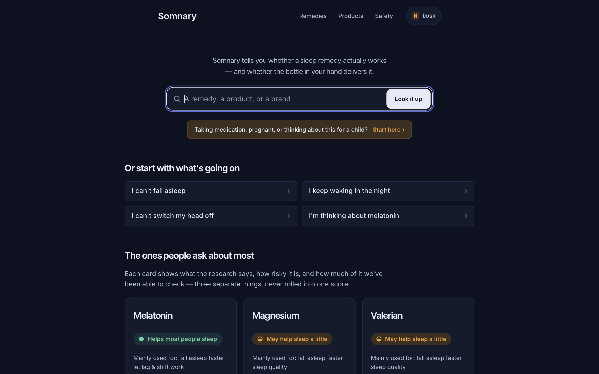
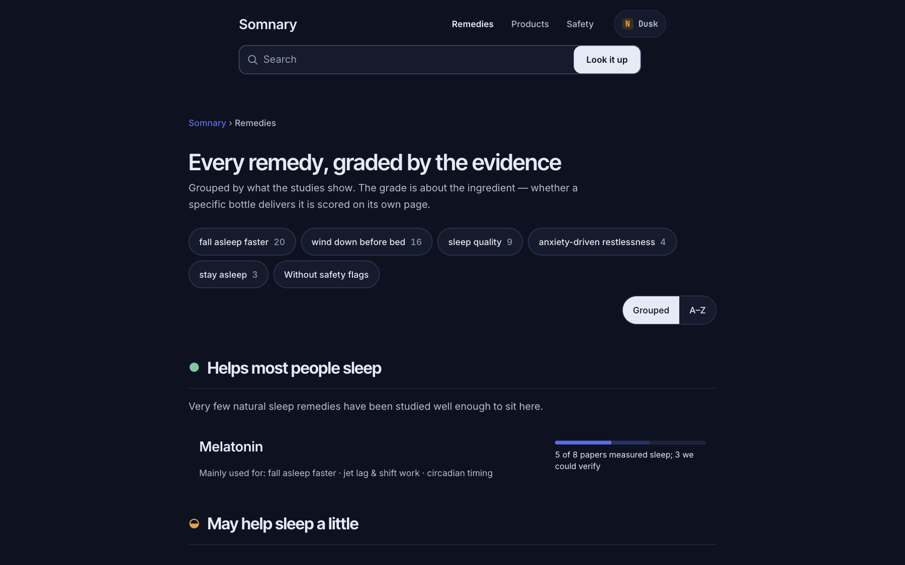
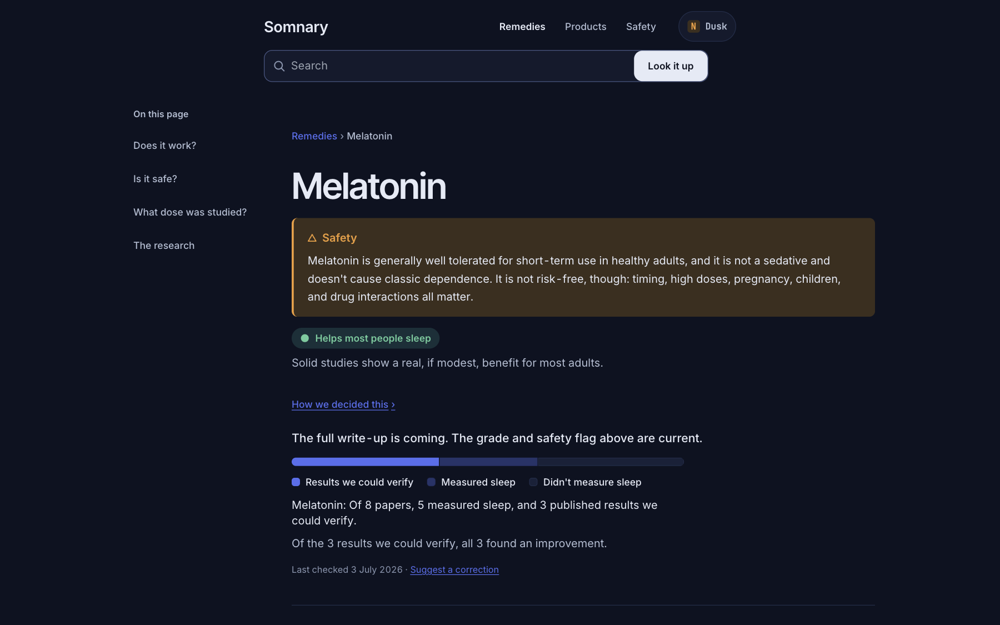
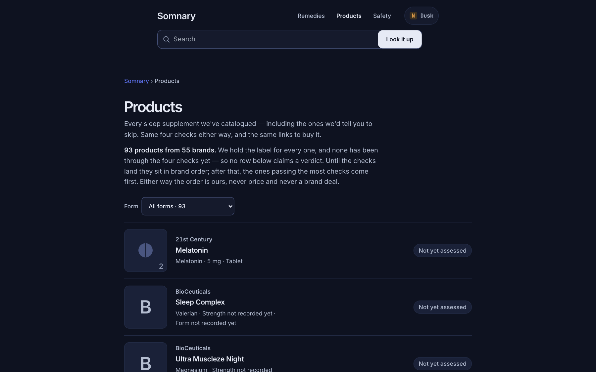
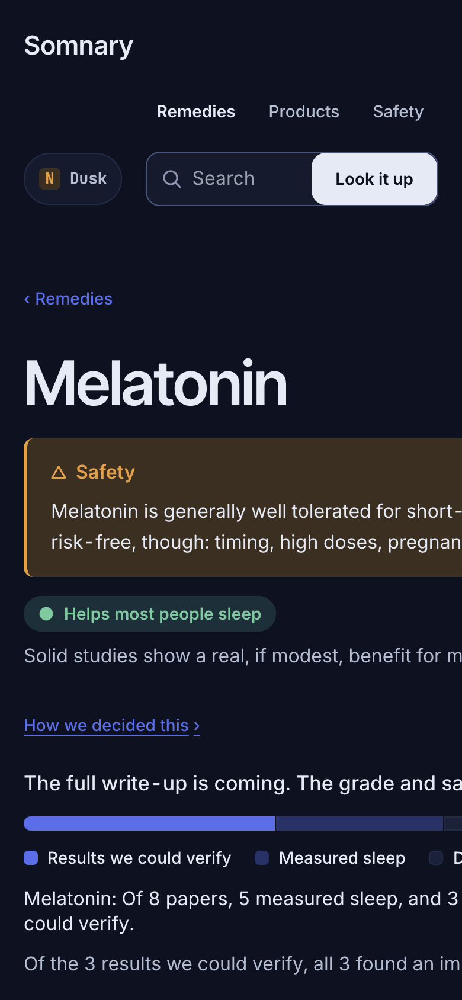

The product and the brief
Somnary answers three questions about sleep supplements: does it exist, does the evidence support it, and is it safe for me? The database holds remedies, products, ingredients and outcomes, with citations behind every claim.
The previous design was the problem: a system with a database underneath and a layer of generic wellness styling on top that read like every other supplement site — photographed pills, soft gradients, emoji icons, rounded everything, and an evidence model presented as marketing. For a health product, that look is not just ugly, it is untrustworthy. The brief: rebuild the experience so the evidence is the interface. Constraints set by the owner up front: sans-serif typography only, no photography of pills or people, no AI-slop markers (cream-and-terracotta, near-black-and-acid-green, blanket rounded corners), and an accessibility bar of WCAG 2.2 AA.
Research and direction
I surveyed the health-data surface for what credibility looks like when executed well. Reference points that shaped the direction:
- Examine.com — the canonical supplement-evidence database: grade chips, effect tables, dense but calm.
- Open Targets Platform — the gold standard for facets, filter bars and exportable rows on dense science.
- Cronometer — warm paper, one accent, a data surface that stays legible at density.
- Nature — trust through restraint: strict hierarchy, citations, monochrome.
- WHO — the public-authority blueprint: saturated blue, unadorned clarity.
The anti-pattern list I wrote and then avoided: floating pills over gradient blobs; stock photography of supplements; emoji as icons; rounded-3xl-everything SaaS look; trust badges and glowing text; decorative charts with no units; and the cream-plus-terracotta-and-serif wellness pairing that is now the loudest AI-slop marker — which is doubly banned here because of the sans-only rule.
The direction that won: Clinical Editorial on a white ground. White paper (#ffffff, #f7f9fc panels), ink navy headings, one signal blue, and data that is always set in JetBrains Mono. The personality comes from the data treatment, not decoration: every dose, percentage and grade in mono, tight tables with hairline rules, and the evidence ledger as the one memorable thing. The night variant is documented (dark ground, periwinkle moon accent, amber), ready when the product earns it; it does not ship half-baked.
The design system
Token layer, then components, then rules. This is the same discipline used on the engagement design systems (articles 52 and 57): no component without a spec, no colour without a contrast check, no claim without a grade.
| Token group | Values | Where used |
|---|---|---|
| Ground | surface #ffffff; soft #f7f9fc | Page, panels |
| Ink | ink #0f1b2d; ink-soft #48586e; muted #9aa4b1; line #dde2ea | Text, secondary, captions, rules |
| Signal | #1a66f0 | Links, interactions, primary actions |
| Evidence | good #0e7a4f; caution #b04a1f; bad #b42318 | Grade chips (always with text label) |
| Type | Inter Tight (display); Inter (body); JetBrains Mono (all data) | Scale 34 / 26 / 21 / 17 / 15 / 13 / 11 |
| Layout | 4 px grid; radius 6 / 4; measure 68ch; focus 2 px #1a66f0 offset 2 | Spacing, cards, prose, focus |
Authoritative source: docs/DESIGN_SYSTEM_2026.md and the Open Design bundle (design/od-bundle/) in the repo.
Nine core component specs: the evidence-ledger table row, grade chip, remedy card, product label card, safety callout, search result row, facet filter, breadcrumb and footer. Each spec carries its states (default, disabled, focus, loading — a shimmer-free skeleton) and its accessibility note. The charter is R1-R6 in RULES.md: no serif anywhere, no photography of pills or people, every number in mono, every claim graded, no component without a spec, plain language always.
What it looks like





The evidence ledger
The signature element: every outcome on a remedy page is a table, and every row is one study — citation | dose | effect | quality — set in mono with a grade chip on the right. No prose summary the reader cannot interrogate; no rating baked into a number that hides its method. The ledger makes the evidence model the visual model, and it is the thing the site is remembered by. That is where the boldness is spent; everything else stays quiet and disciplined.
Tooling pipeline
The system flows from source to screen through one path: tokens authored in the design-system spec, exported as the Open Design bundle (RULES, SKILL, manifest, component specs), staged for Figma through the same cycle — Figma is used for user flows, wireframes and stakeholder review, while the design systems themselves are authored code-first (tokens, components, rules charter) with the design-system layer in OpenDesign, so the token layer drives both the rendered screens and the documentation, and implemented as Astro + Tailwind consuming the same token values from CSS custom properties, so tokens cannot drift between design and code. The content layer (content collections and the citation resolver) predates this redesign and survived it unchanged.
Implementation
Rebuilt surfaces: the app shell (navigation, breadcrumbs, footer), home, remedies listing with facets, remedy detail with the ledger, the products listing, safety and how-we-grade pages, and search with tiered results. Dusk mode is documented in the token spec but deliberately not shipped until the contrast story is as strong as the light theme — a staged decision, not a shortcut. Data: no invented claims; every grade comes from the existing content model with its sources.
Accessibility and quality bar
- Contrast: all text tokens ≥ 4.5:1 on their surfaces; the evidence-red is the deep AA version (#b42318), not a brand red that fails.
- No colour alone: drug interaction and risk grades always pair a text label, an icon or order with the colour.
- Focus: 2 px signal-blue outline, offset 2, on every interactive element; visible in both keyboard and touch.
- Tables: marked headers, linear reading order, no colour-coded cells without labels.
- Motion: no ambient animation; reduced-motion respected.
- Copy: plain language; claims always carry their grade ("may support" never "promotes").
Verification: the production build passes clean, the pages render on the live deployment, and the ledger renders from real content on the remedy page. Automated pipeline runs and manual passes both feed the release bar; the content editorial layer is next on the list, gated on medical review for any safety copy.
Links and status
- Live: somnary.vercel.app
- Code + docs: github.com/sammozaffari/somnary (branch ndia-redesign; docs/DESIGN_SYSTEM_2026.md, design/od-bundle/)
- Design system spec: 10 tokens, 9 component specs, RULES charter, Open Design bundle